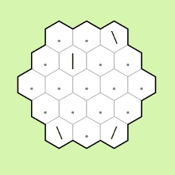
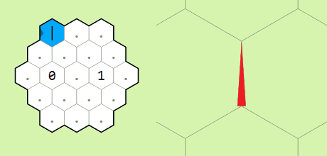
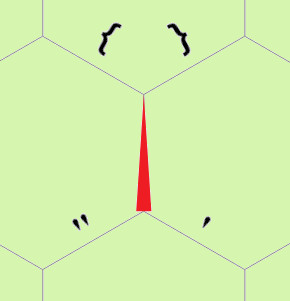
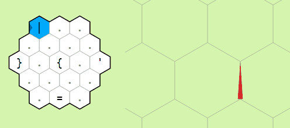
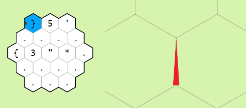
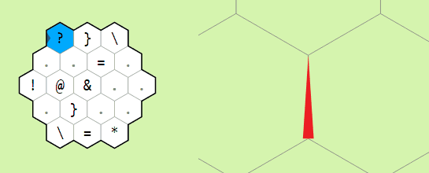

Esolangs: Hexagony
6 / 8 / 21
This is the first article of a series on cool esoteric programming languages. In brief, these are languages constructed with the sole purpose of being absurd and unique and are often not actually very useful for coding. For our first look at esolangs, lets explore the 2-dimensional language Hexagony.
Designed in 2015 by Martin Büttner, Hexagony works by placing commands on a hexagonal grid which can be traversed in any direction. The memory for the language is also hexagonal, with each edge of an infinite hexagonal tiling of the plane holding a single integer value.
The language includes a total of 93 commands but half of these are a-Z which are very simple. I will cover most of the commands here but you can also visit the original interpreter page for a full breakdown of each of the commands, the control flow, and the memory model.
I did not find terribly many resources out there for newcomers to this language so I hope that this article will be useful in that I will provide several visual examples of the commands and include a few basic programs with detailed explanations. I will also link all the other tools and forum posts I found helpful at the end of this article.
Instruction Pointers
An interesting feature of Hexagony is that there are 6 instruction pointers (IPs) which start in the six corners of the hexagonal grid. The program always starts with the top left pointer moving along the top edge to the right, but we can switch to the different pointers later in the program if we so desire. To angle our pointer and move it around in our 2-dimensional work space, we have a number of 'mirror' commands which reflect the flow of the pointer in the obvious direction. These mirrors include /, \, |, and _.

IP0 reflecting off mirrors and wrapping around the edges of the grid
A key thing to notice in the example above are that when the pointer leaves the hexagon, it wraps around to the other side. In particular, if the rows are numbered 0 through n, leaving on row k < n/2 brings the pointer to row n/2 + k. Leaving along a bisector of a vertex will bring the pointer to either the top or bottom row depending on if the current memory cell is ≤ 0 or > 0 repsectively. The other thing to notice from this example is that the pointer will pass through mirrors it is parallel to.
We also have the < and > commands which act like mirrors along the expected directions, flow-redirectors in the direction they point, and branches when the pointer enters from the vertex. Determining which branch the pointer takes is the same as for when the pointer leaves along the vertex of the grid.
Other movement commands include $ which acts as a 'jump' skipping the next command and ], [ which increment and decrement the current pointer respectively. When we switch pointers, the old pointer stops moving but its position and orientation are remembered. We resume movement on the new pointer from its previous position and orientation.

Example of jump command and incrementing through all 6 pointers
Memory Manipulation
The memory is initialized as an infinite hexagonal grid with the value 0 assigned to each edge. There is a single memory pointer (MP) oriented along one of these edges. The 52 letter characters will set the current memory edge to the letters ASCII value. The digits 0-9 will multiply the current edge by 10 and then add the digit (this is useful because it lets us process decimal numbers in our code despite memory edges holding only integer values).

Concatenating digits to the inital memory edge in a loop
Aside from these commands which let us manually set the values of memory edges, we also have the typical operations of any computer language, +, -, *, : (division), and % (modulus). These operations are always performed as (left ◦ right) where left and right are the edges relative to the orientation of the memory pointer and the output of the operation overwrites the current memory edge.
The other basic operations include ~ which multiplies the current edge by -1 and ), ( which increment and decrement the current edge by 1 respectively. We also have & which will copy a value to the left or right of the pointer to the current memory edge. It copies the left value if the current edge is ≤ 0 and the right value otherwise.
However, none of these memory commands would be useful if we couldn't change the position and orientation of the memory pointer to access other edges. The movement commands for the memory pointer across the grid include { and } which move the pointer forward and to the left or right respectively. The commands " and ' do the same but backwards and to the left or right. The last movement command is = which swaps the orientation of the memory pointer.

Movement commands relative to the memory pointer

Moving the pointer around the memory grid

Example of operation on two memory edges
Input / Output
At this point Hexagony can already do just about anything we need (with a lot of work). The last thing we could ask for is input from the user and output to the terminal. There are two options for each of these.
For input, we have the commands ' and ?. The first reads a byte from stdin and sets the current memory edge to its value. The second will read from stdin
until it comes across a +, -, or a digit and will continue to read digits until there are none left. This allwos us to read individual signed integers and set the current memory edge to their value.
For output, we have ; and !. The first will simply write the current memory mod 256 as a byte to stdout and the second will output the raw integer value of the current edge.
Examples
Time to see this language in action! I've put together a few examples of programs which try to use a diverse set of commands. There are a lot more coding challenges I want to try with this language, but the most difficult I've been able to pull off so far is my Fibonacci program (in 37 bytes!)

Program which takes a single integer input and outputs its square.
Note the use of @ which wasn't covered above. This command simply terminates the program.

Fibonacci-like sequence program which takes two integers as input as outputs the Fibonacci-like sequence starting with those two values. Notice that in the loop IP1 enters there is the sequence of commands 1 0 ; . These will appear often in Hexagony programs since 10 is the ASCII value for newline.
Resources
- Online Visual Interpreter (Used this for all my visualizations)
- Forum on Hexagony Self-Interpreter
- A Better Fibonacci Sequence Program